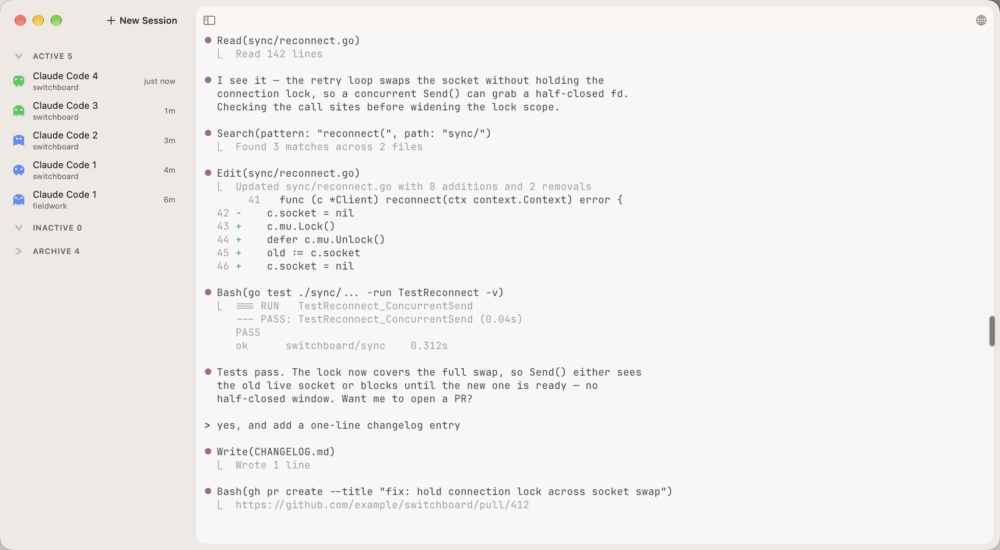
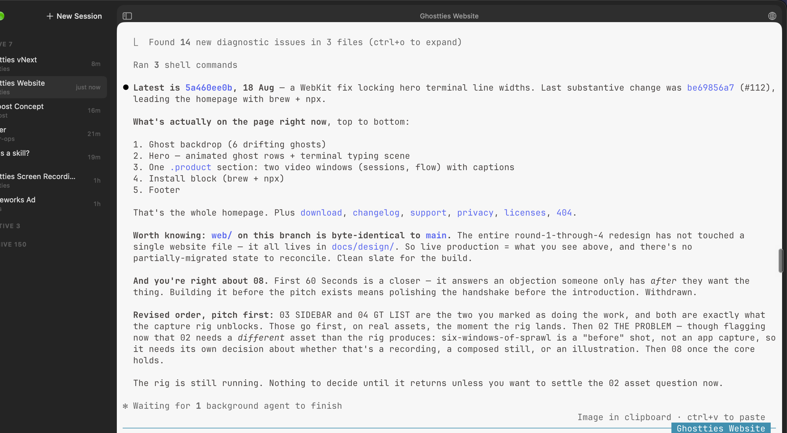
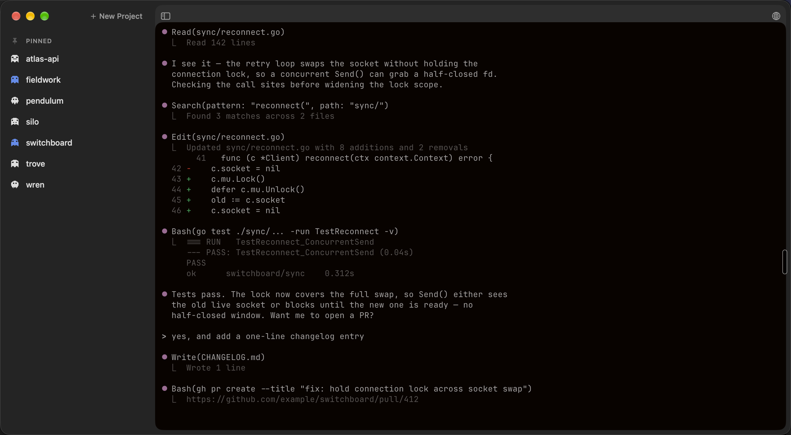

<!-- Generated by scripts/capture-marketing.sh — do not hand-edit.
     Swap <picture> for whichever single state a given layout needs,
     or keep all four and toggle visibility with the site's own
     light/dark + Sessions/Projects state. Paths are relative to this
     file (docs/design/web-redesign/captures/). -->

<picture data-app-state="sessions" data-app-theme="light">
  <source srcset="app-sessions-light@2x.webp" type="image/webp">
  
</picture>

<picture data-app-state="sessions" data-app-theme="dark">
  <source srcset="app-sessions-dark@2x.webp" type="image/webp">
  
</picture>

<picture data-app-state="projects" data-app-theme="light">
  <source srcset="app-projects-light@2x.webp" type="image/webp">
  
</picture>

<picture data-app-state="projects" data-app-theme="dark">
  <source srcset="app-projects-dark@2x.webp" type="image/webp">
  
</picture>
